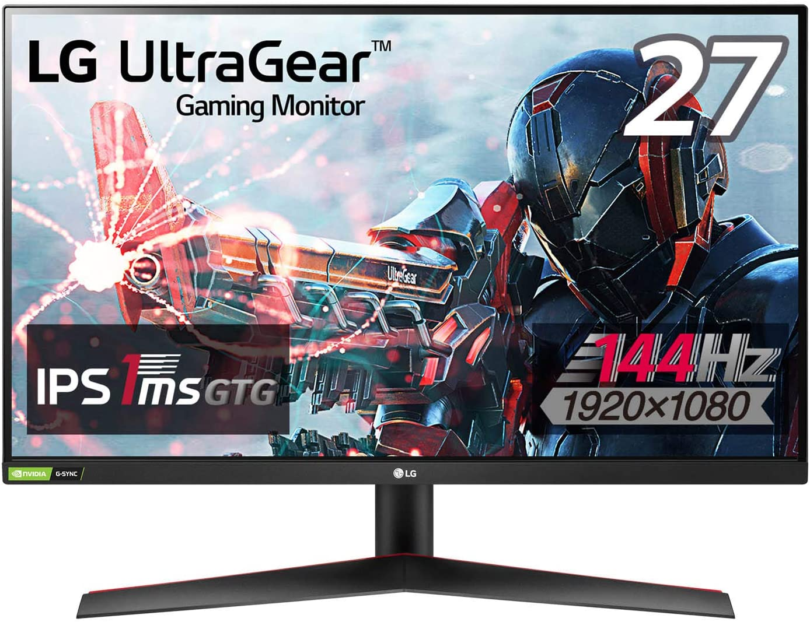
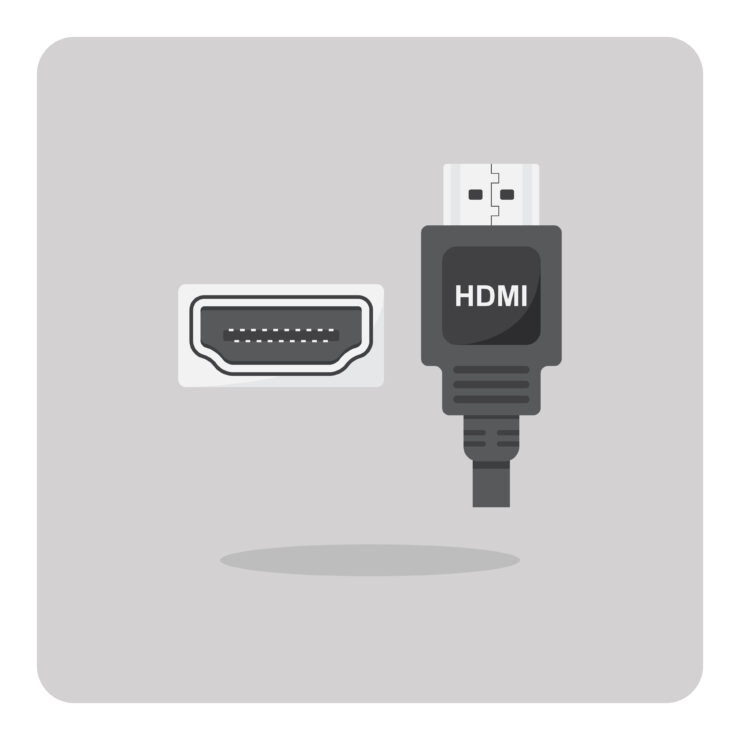
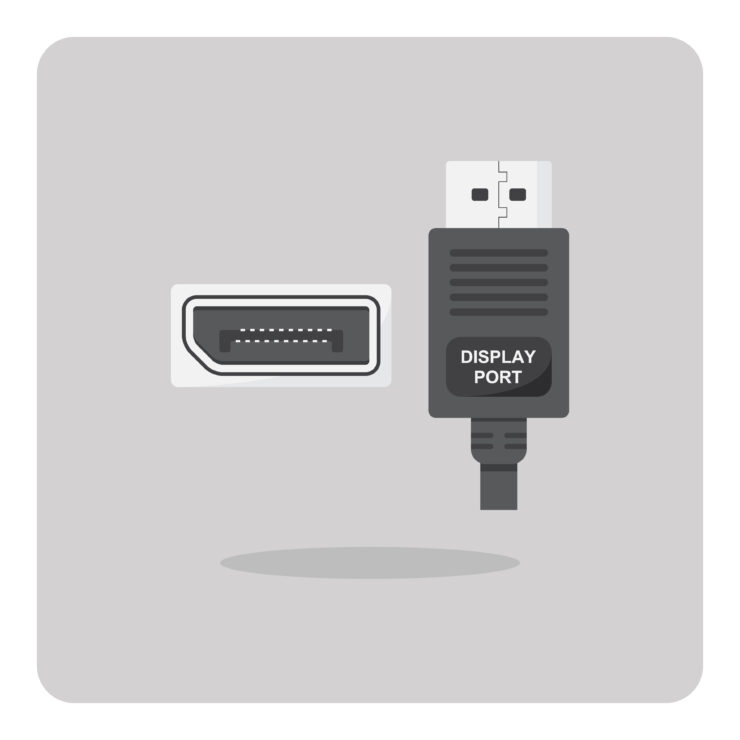
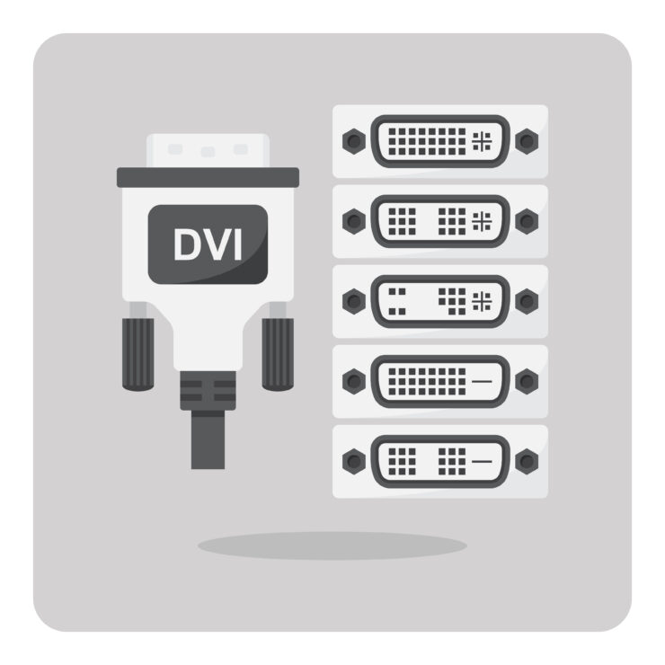
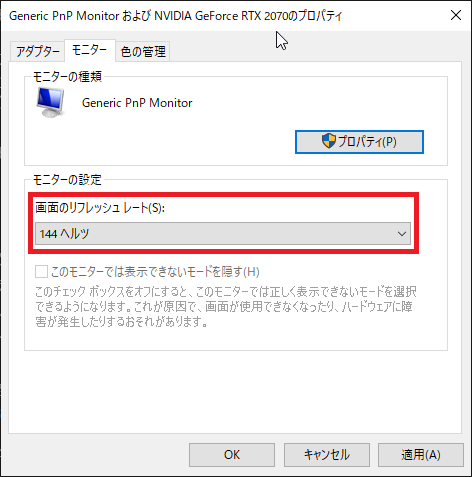
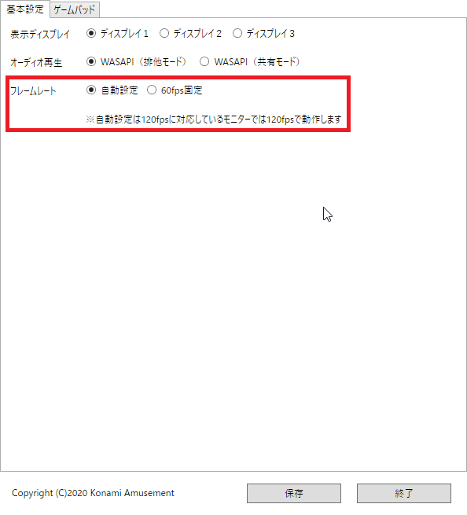
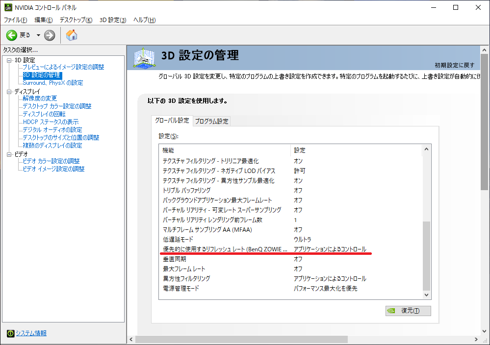
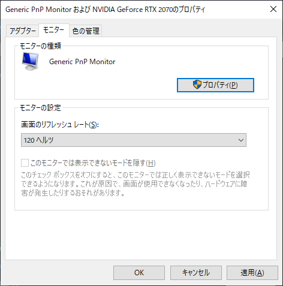

📑 文章目录（21 节）
- 选购 INFINITAS 显示器的核心要点
- 刷新率（リフレッシュレート）
- 显示器尺寸
- 液晶面板类型（IPS/TN/VA）
- 响应时间（応答速度）
- 输入延迟（用电视玩必须开游戏模式）
- 其他建议顺便确认的项目
- INFINITAS 推荐显示器与电视 9 选
- 24 英寸：在书桌上轻松入门就选这些
- 27 英寸：兼顾电脑日常使用就选这些
- 32 英寸：想在桌上获得更大视野就选这款
- 43 英寸：想要还原 Lightning Model 街机体验就选电视
- OLED（有机 EL）：极致追求零残影的首选
- 总结
- 别忘了设置刷新率
- PC 端设置
- INFINITAS 游戏内设置
- 补充：如果启动 INFINITAS 时没有切换到 120Hz 怎么办
- 使用 NVIDIA GeForce 显卡时
- 通过 Windows 系统直接设置
- INFINITAS 显示器常见问题
- 💬 评论区答疑
“玩 INFINITAS 的显示器该买多少英寸、多少 Hz？”“用电视玩的话延迟没问题吗？”
本文整理了适合游玩 beatmania IIDX INFINITAS 的显示器・电视选购方法、目前就能买到的推荐显示器与电视，以及让游戏稳定运行在 120Hz 下的详细设置步骤。
笔者在家中的站姿游玩环境下，使用的是东芝 REGZA 43Z570K（43 英寸・倍速液晶电视）来游玩 INFINITAS。
- 支持 120Hz 显示是首要前提。144Hz・180Hz 的显示器只要能切换到 120Hz 就没问题
- 搭建站姿环境就选 43 英寸（与街机框体同尺寸）。支持 120Hz 的倍速液晶电视选择更多且价格实惠
- 放在电脑桌上玩就选 24〜27 英寸的电竞显示器。分辨率只要 Full HD（1080p）就足够了
- 用电视玩时务必开启游戏模式以降低延迟，音频也不要从电视输出，而是直接从 PC 输出
关于主机配置和站姿环境的搭建方法，也可以一并参考以下文章。
准备刚入坑 INFINITAS 的朋友，可以点击这里查看入门步骤与费用说明。
选购 INFINITAS 显示器的核心要点

下面按重要程度从高到低大致为你逐项讲解。
刷新率（リフレッシュレート）
刷新率表示 1 秒内画面刷新的次数。数值越高，动态画面就越流畅顺滑。
INFINITAS 是按 120Hz 运行的，因此一定要选择能够支持 120Hz 显示的显示器。官方推荐配置同样写明“能够以 120Hz 显示的显示器”。虽然 60Hz 显示器也能玩，但谱面下落时的流畅度完全是天壤之别。
目前主流电竞显示器大多为 144Hz〜180Hz。这类显示器通常都能选择 120Hz 档位，所以本身没问题；但需要注意，如果 INFINITAS 在非 120Hz 下运行，判定可能会出现偏移。使用 144Hz 及以上显示器时，请务必按本文后半段介绍的方法将其设为 120Hz。
市面上虽然也有 240Hz 或 360Hz 的显示器，但 INFINITAS 最高只支持到 120Hz，没必要为了它去花冤枉钱买超高刷显示器。
顺带一提，我自己用过 144Hz 和 240Hz 的显示器，老实说完全看不出差别。当年从 60Hz 换到 144Hz 时确实惊艳不已，但再往上似乎就已经超出肉眼能分辨的极限了。
显示器尺寸
IIDX 框体（Lightning Model）的显示器尺寸为 43 英寸。
不过，支持 120Hz 以上的 43 英寸 PC 显示器产品很少且价格昂贵。因此，如果执着于 43 英寸，请把电视也纳入备选范围。
如果不是搭建站姿环境，而是打算放在书桌上作为电脑显示器使用，建议从兼顾日常使用且性价比高的 24～27 英寸里面挑选。
个人认为：搭站台就选 43 英寸，放书桌就选 27 英寸（32 英寸也可以，但可选机型比 27 英寸少）。笔者在站姿环境里放的是 43 英寸的 REGZA 43Z570K，平时在街机厅和家里来回切换游玩，几乎不会因为观感差异而感到不适。
液晶面板类型（IPS/TN/VA）
液晶面板主要有 IPS、VA、TN 三大类型，大致特点总结如下：
| IPS | VA | TN | |
|---|---|---|---|
| 价格 | 高 | 中 | 低 |
| 可视角度 | 广 | 广 | 窄 |
| 色彩表现 |
早年间常有人说“IPS 液晶响应速度慢”，但近年来据说已经相差无几了，所以有条件的话优先选择画质漂亮的 IPS 液晶面板会更好。
响应时间（応答速度）
响应时间是指显示器像素颜色切换所需的时间，通常写作 ○ms 或 ○ 毫秒。注意它很容易和显示延迟混为一谈。
数值越低，画面拖影与残影就越少、越流畅。对于 144Hz 显示器而言，7ms 以下可以作为一个参考基准。
输入延迟（用电视玩必须开游戏模式）
除了响应时间之外，还有一个画面信号输入后到实际显示在屏幕上的耗时，称为输入延迟（或显示延迟）。电竞显示器的延迟基本小到可以忽略不计，但电视因为会加入画质增强处理，往往导致延迟偏大。
如果想用电视玩，请务必选择带游戏模式（低延迟模式）的机型，并确保开启后再玩。REGZA 之所以深受音游玩家青睐，正是因为它的游戏模式延迟极低。如果开启后仍有一点体感偏差，再用 INFINITAS 内的判定时机调整去微调即可。
此外，如果直接用电视自带扬声器发声，声音也会有延迟。推荐把音箱或耳机直接插在 PC 上出声。
其他建议顺便确认的项目
屏幕分辨率
屏幕分辨率是指构成屏幕画面的像素数量。
| 名称 | 像素数 |
|---|---|
| Full HD（全高清） | 1920×1080 （约 200 万像素） |
| WQHD（2K） | 2560×1440 （约 370 万像素） |
| 4K | 3840×2160 （约 830 万像素） |
INFINITAS 本身是 HD（1280×720）输出，因此 Full HD（1080p）显示器就已经完全够用了。
镜面屏（光泽 / Glare）与雾面屏（非光泽 / Anti-Glare）
屏幕表面光滑反光的是镜面屏（光泽液晶），带有磨砂质感的是雾面屏（非光泽液晶）。
电脑显示器以雾面屏居多，而电视几乎全都是镜面屏。
镜面屏的画面本身看起来更通透艳丽，但容易产生环境倒影和反光干扰注意力，不太适合需要高度专注的电脑办公或日常作业。
如果打算兼作电脑日常主力屏，“雾面屏”体验更好；但如果目标是 43 英寸且以打游戏和看影音为主，电视的选择面广得多，那也就自然会选到“镜面屏”。
接口类型与附带线材
连接 PC 时，目前以 HDMI 或 DisplayPort 为主流。比较老旧的电脑或显卡有时也会用到 DVI 接口。



根据线材规格的不同，部分老旧线材可能不支持 144Hz 输出，建议尽量准备符合最新标准的视频线。
升降调节、俯仰角度调节与 VESA 壁挂孔
有些显示器并不支持高度调节，购买前最好先确认一下。尤其是廉价入门显示器，自带支架往往比较简陋。
只要支持 VESA 壁挂标准，后期就可以自由换装显示器支架臂或壁挂架。
内置扬声器
与电视不同，大多数电脑显示器并不内置扬声器，基本上都需要外接音箱或佩戴耳机来玩。
哪怕是用电视玩 INFINITAS，出于音频延迟的考虑，把声音改由 PC 单独输出也更稳妥。
INFINITAS 推荐显示器与电视 9 选
下面从目前市面上买得到的机型中，挑选了能够流畅舒适游玩 INFINITAS 的显示器与电视。文中的价格为大致参考价（截至 2026 年 10 月），最新售价请以各电商平台为准。
24 英寸：在书桌上轻松入门就选这些
AOC 24G4/11
只需 1 万日元出头就能买到的 24 英寸电竞显示器。采用 IPS 面板、最高支持 180Hz，而且在这个价位极其难得地配备了支持高度升降和竖屏旋转（Pivot）的多功能支架。
非常推荐给想以最低预算搭起 120Hz 以上游玩环境的新手作为第一台显示器。
规格参数
| 尺寸・分辨率 | 23.8 英寸・Full HD（1920×1080） |
|---|---|
| 刷新率 | 最高 180Hz |
| 面板 | IPS（雾面非光泽） |
| 响应时间 | 1ms（GtG） |
| 输入接口 | HDMI 2.0×1、DisplayPort 1.4×1 |
| 支架 | 升降・俯仰・左右旋转・竖屏旋转 |
| VESA | 支持 |
LG 24G414B-B
这是此前本文推荐过的 LG 24 英寸型号（24GN650-B）的后继机型，属于 2026 年新款。采用 IPS 液晶面板、最高 144Hz，配备支持 80mm 升降调节的支架，调整视线高度非常方便。
如果更看重大厂的稳妥安心感，选这款准没错。它支持的刷新率范围（48〜144Hz）中完整包含 120Hz。
规格参数
| 尺寸・分辨率 | 23.8 英寸・Full HD（1920×1080） |
|---|---|
| 刷新率 | 最高 144Hz（48〜144Hz） |
| 面板 | IPS（防眩光雾面） |
| 响应时间 | 1ms（GtG） |
| 输入接口 | HDMI 1.4×1、DisplayPort 1.4×1 |
| 支架 | 升降（80mm）・俯仰 |
| VESA | 100×100 |
27 英寸：兼顾电脑日常使用就选这些
LG 27G414B-B
上面介绍的 LG 24G414B-B 的 27 英寸放大版。玩 IIDX（弐寺）屏幕越大自然越容易看清，只要桌面空间和预算允许，相比 24 英寸更推荐直接上这款。价格在 2 万日元左右且自带升降支架。
规格参数
| 尺寸・分辨率 | 27 英寸・Full HD（1920×1080） |
|---|---|
| 刷新率 | 最高 144Hz（48〜144Hz） |
| 面板 | IPS（防眩光雾面） |
| 输入接口 | HDMI×1、DisplayPort 1.4×1 |
| 支架 | 升降（80mm）・俯仰 |
| VESA | 100×100 |
AOC Q27G4F/11
在 27 英寸上用 Full HD 分辨率的话，日常看文字会略显粗糙；如果平时还要长时间做 INFINITAS 以外的电脑工作或玩其他游戏，更推荐这款 WQHD（2560×1440）分辨率的机型。不仅最高支持 180Hz，还配齐了支持升降与竖屏旋转的支架，价格却跟 Full HD 的 LG 几乎持平。
规格参数
| 尺寸・分辨率 | 27 英寸・WQHD（2560×1440） |
|---|---|
| 刷新率 | 最高 180Hz |
| 面板 | Fast IPS |
| 响应时间 | 1ms（GtG） |
| 输入接口 | HDMI 2.0×1、DisplayPort 1.4×1 |
| 支架 | 升降（130mm）・俯仰・左右旋转・竖屏旋转 |
| VESA | 100×100 |
32 英寸：想在桌上获得更大视野就选这款
LG 32G620B-B
对于觉得 27 英寸不够大、但又没有足够空间摆放 43 英寸电视的玩家，32 英寸刚好是恰到好处的尺寸。也很适合习惯把控制器摆在离屏幕稍远一点位置游玩的人。
LG 的 32G620B-B 是 2026 年推出的新机型，具备 WQHD 分辨率、最高 200Hz 的 IPS 液晶面板，并配有可调节高度等的多功能支架。
规格参数
| 尺寸・分辨率 | 31.5 英寸・WQHD（2560×1440） |
|---|---|
| 刷新率 | 最高 200Hz |
| 面板 | IPS（防眩光雾面） |
| 响应时间 | 1ms |
| 输入接口 | HDMI、DisplayPort |
| 支架 | 多功能支架 |
43 英寸：想要还原 Lightning Model 街机体验就选电视
如果想用与 IIDX 框体（Lightning Model）完全相同的 43 英寸屏幕输出 120Hz，目前的最佳选择是倍速液晶电视。以前市场上也有 43 英寸的 144Hz 电竞显示器（如 ASUS XG43UQ、AOC G4309VX 等），但如今均已停产且无后续新品，基本买不到全新货了。
REGZA 43Z670R
素有“打游戏就买 REGZA”的美誉，东芝 REGZA 长期以来都非常重视游戏相关功能，在音游玩家圈子里也是经久不衰的经典之选。笔者自己的站姿环境用的也是 REGZA 43Z570K（2021 年款），只要打开游戏模式，完全不会有延迟困扰。
由于 43Z570K 系列已经停售，现在要买的话，推荐作为倍速液晶继任者的 43Z670R（2025 年款）。官方标明其支持 Full HD（1080p）120Hz 信号输入，游戏模式下的延迟约 0.83ms。
另外请注意，亚马逊上该机型为第三方卖家供货，库存和售价容易波动。
规格参数
| 尺寸・分辨率 | 43 英寸・4K |
|---|---|
| 刷新率 | 120Hz（倍速），游戏模式下最高 144Hz VRR |
| 120Hz 输入 | 4K/120Hz、1080p/120Hz（亦支持 1080p/144Hz） |
| 游戏模式延迟 | 约 0.83ms（官方标称） |
| 输入接口 | HDMI 2.1（支持 4K120p/144p・VRR・ALLM） |
| 表面工艺 | 镜面（光泽） |
海信（Hisense）43E60S
追求性价比就选海信（Hisense）。43 英寸倍速面板的 4K 电视只需 9 万日元左右，比 REGZA 便宜了大约 2 万日元。这款属于 Amazon.co.jp 限定型号，由亚马逊自营直接发货，库存也比较稳定。
根据海信日本官网资料，E60S 系列支持 1080p/120Hz 输入，开启游戏模式 Pro 时的延迟约 0.83ms（说明书同样涵盖 43E60S，该延迟数据为系列通用标称值）。笔者此前在自己的 X 账号上也介绍过同品牌的海信 43E7H 为“大屏玩 INFINITAS 性价比最强”，实际也有不少玩家正在用海信电视以 120Hz 畅玩 INFINITAS。
规格参数
| 尺寸・分辨率 | 43V 型・4K |
|---|---|
| 刷新率 | 倍速，游戏模式下最高 144Hz VRR |
| 120Hz 输入 | HDMI 输入 1・2 支持 |
| 游戏模式延迟 | 约 0.83ms（官方标称，E60S 系列） |
| VESA | 300×300 |
OLED（有机 EL）：极致追求零残影的首选
与液晶屏幕相比，OLED（有机 EL）的响应速度具有压倒性优势，几乎完全没有拖影与残影。而且黑色显示极为纯粹深邃，谱面轮廓会显得格外清晰锐利。虽然售价偏高，但如果你对视觉清晰度有极致追求，完全值得考虑。
OLED 如果长时间在固定位置持续显示同一静态画面，可能会出现痕迹残留的“烧屏”现象。不过近年来新款机型的防烧屏保护相当完善，例如微幅像素位移、自动检测静态画面并降低亮度、关机后自动像素维护等，防烧屏功能已经非常成熟，不必像过去那样过度担忧。
但需要注意的是，IIDX（弐寺）本身属于判定线、分数、血条等固定元素会长时间静止在同一位置的游戏。长时间游玩的玩家，请务必保持防烧屏功能处于开启状态，也不要把屏幕亮度开得过高。购买前顺便确认一下保修政策（是否涵盖烧屏）会更加放心。
Dell S3225QC（32 英寸 OLED 显示器）
一款最高刷新率恰好为 120Hz 的 4K OLED 显示器。既完美契合 120Hz 运行 INFINITAS 的需求，价格又比超高刷新率的电竞 OLED 显示器实惠不少。自带支持高度调节的支架，放在桌面上使用非常顺手。
注：亚马逊上该商品为第三方店铺发售。
规格参数
| 尺寸・分辨率 | 31.6 英寸・4K |
|---|---|
| 刷新率 | 最高 120Hz |
| 面板 | OLED（有机 EL） |
| 响应时间 | 0.03ms |
| 输入接口 | HDMI×1、USB-C×1 |
| 支架 | 升降・俯仰 |
LG OLED48B5PJA（48 英寸 OLED 电视）
如果想在站姿环境里用上 OLED，这款 LG 48 英寸 OLED 电视是不二之选。目前 42 英寸的全新 OLED 电视已经很难买到，因此比街机框体 43 英寸大上一圈的 48 英寸便成了最现实的最小尺寸选择。
支持 120Hz 与 HDMI 2.1，各类游戏优化功能一应俱全。由于机身尺寸偏大，购买前请务必提前量好电视柜高度与摆放空间。
规格参数
| 尺寸・分辨率 | 48 英寸・4K |
|---|---|
| 刷新率 | 120Hz |
| 面板 | OLED（有机 EL） |
| 输入接口 | HDMI 2.1×4（支持 G-SYNC・FreeSync） |
总结
为 INFINITAS 挑选显示器时，最核心的一点就是支持 120Hz 显示。在此基础上，根据自己的游玩空间挑选合适尺寸即可：
- 书桌轻松入门：24 英寸的“AOC 24G4/11”或“LG 24G414B-B”
- 兼顾日常办公娱乐：27 英寸的“LG 27G414B-B（Full HD）”或“AOC Q27G4F/11（WQHD）”
- 书桌大屏畅玩：32 英寸的“LG 32G620B-B”
- 还原 Lightning Model 体验：43 英寸倍速电视“REGZA 43Z670R”或高性价比之选“海信 43E60S”
- 极致追求低残影：OLED 机型“Dell S3225QC”或“LG OLED48B5PJA”（记得开启防烧屏功能）
关于电视柜、PC 主机等其他周边环境的搭建，也欢迎参考以下文章。
别忘了设置刷新率
PC 端设置
只要显示器本身支持，INFINITAS 在启动时通常会自动切换为 120Hz，因此原则上不需要在 PC 端额外手动修改（不过视具体硬件环境，有时也需要在显卡驱动里设置自定义分辨率等）。
但玩其他游戏时另当别论，为了充分发挥显示器的性能，还是建议先完成以下设置：

- 在桌面空白处点击右键
- 打开“显示设置（ディスプレイ設定）”
- 打开“高级显示设置（ディスプレイの詳細設定）”
- 点击“显示适配器属性（ディスプレイアダプターのプロパティ）”
- 切换到“监视器（モニター）”选项卡并设置屏幕刷新率
平时直接选择最高的刷新率即可；但如果遇到 INFINITAS 无法以 120Hz 启动、或者运行与判定明显异常的情况，请手动将其设为 120Hz。
INFINITAS 游戏内设置

在启动器中将“帧率（フレームレート）”设为自动设置即可。
做好以上设置后，基本就不会有什么问题了（显示器或电视本体的菜单设置因产品而异，此处从略）。
补充：如果启动 INFINITAS 时没有切换到 120Hz 怎么办
在使用 144Hz、165Hz 等高于 120Hz 的显示器游玩 INFINITAS 时，有时会出现启动游戏后没有自动切回 120Hz 的情况；一旦游戏在非 120Hz 刷新率下运行，判定就会发生大幅度偏移。
如果遇到了这个问题，请尝试以下设置：
使用 NVIDIA GeForce 显卡时

- 在桌面点击右键，打开“NVIDIA 控制面板”
- 点击左侧的“管理 3D 设置”
- 将“首选刷新率（優先的に使用するリフレッシュレート）”设置为“由应用程序控制（アプリケーションによるコントロール）”
通过 Windows 系统直接设置
如果使用的是非 GeForce 显卡驱动、设置后依然未能解决，或者是在用集成显卡（核显）游玩，请直接按以下步骤修改 Windows 设置：

- 在桌面空白处点击右键
- 打开“显示设置（ディスプレイ設定）”
- 打开“高级显示设置（ディスプレイの詳細設定）”
- 点击“显示适配器属性（ディスプレイアダプターのプロパティ）”
- 切换到“监视器（モニター）”选项卡，直接将屏幕刷新率设为“120Hz”
INFINITAS 显示器常见问题
用 60Hz 显示器也能玩 INFINITAS 吗？
可以玩。官方最低配置要求也是“能够以 60Hz 显示的显示器”。不过官方推荐的是 120Hz，在 60Hz 下谱面下落会显得有些卡顿跳帧。如果正准备新买显示器，请务必挑选支持 120Hz 显示的型号。
玩 INFINITAS 需要多高的分辨率才够用？
Full HD（1920×1080）就完全够用了。官方最低配置要求也是“能够显示 1920×1080”。虽然在 4K 电视或 4K 显示器上同样能玩，但没必要单单为了 INFINITAS 去选 4K。
为什么用 144Hz 或 180Hz 显示器玩的时候判定会跑偏？
因为 INFINITAS 是以 120Hz 运行为前提开发的，如果在非 120Hz 刷新率下运行，判定就可能大幅错位。请按照本文“补充：如果启动 INFINITAS 时没有切换到 120Hz 怎么办”中的步骤进行设置，确保游戏以 120Hz 运行。
用电视玩 INFINITAS 的延迟真的没问题吗？
只要开启游戏模式（低延迟模式），延迟就会降到绝大多数人都察觉不到的程度。笔者自己也是开着 REGZA 43Z570K 的游戏模式正常游玩的。剩余的一点点微差用 INFINITAS 游戏内的判定时机调整补正即可，同时音频记得不要走电视，而是直接从 PC 输出到音箱或耳机。
可以直接用笔记本电脑自带的屏幕玩 INFINITAS 吗？
只要是 120Hz 以上的高刷屏就可以玩，但由于屏幕尺寸偏小，平时如果经常在家里和街机框体之间来回切换，视觉差异会非常明显。再加上 INFINITAS 无法单独缩放轨道大小，条件允许的话还是尽量外接一台显示器比较好。
💬 读者评论与作者答疑（1 组对话）